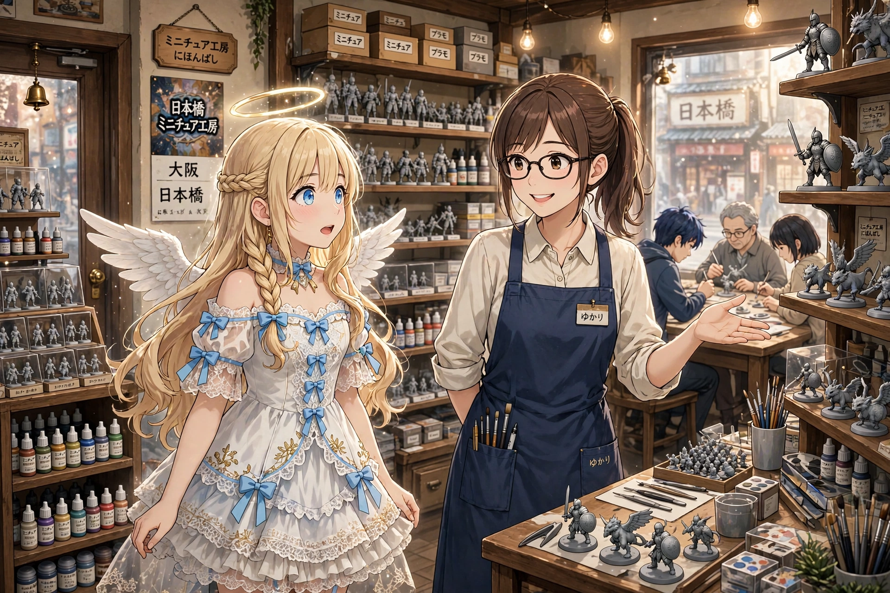
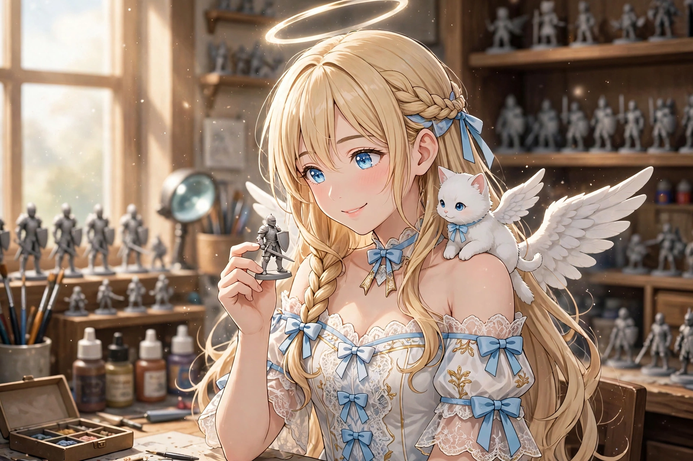
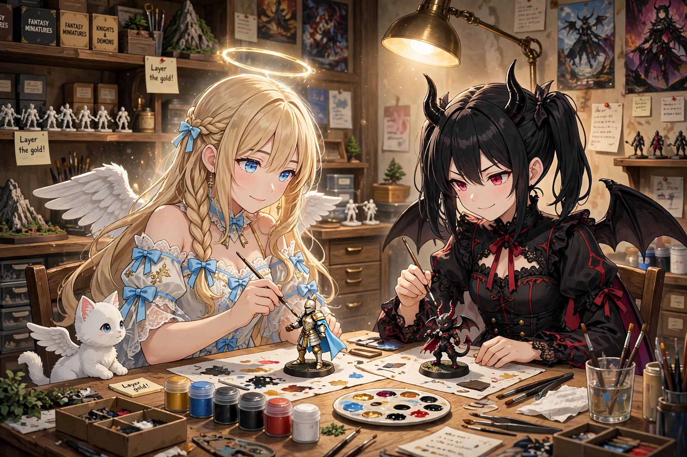
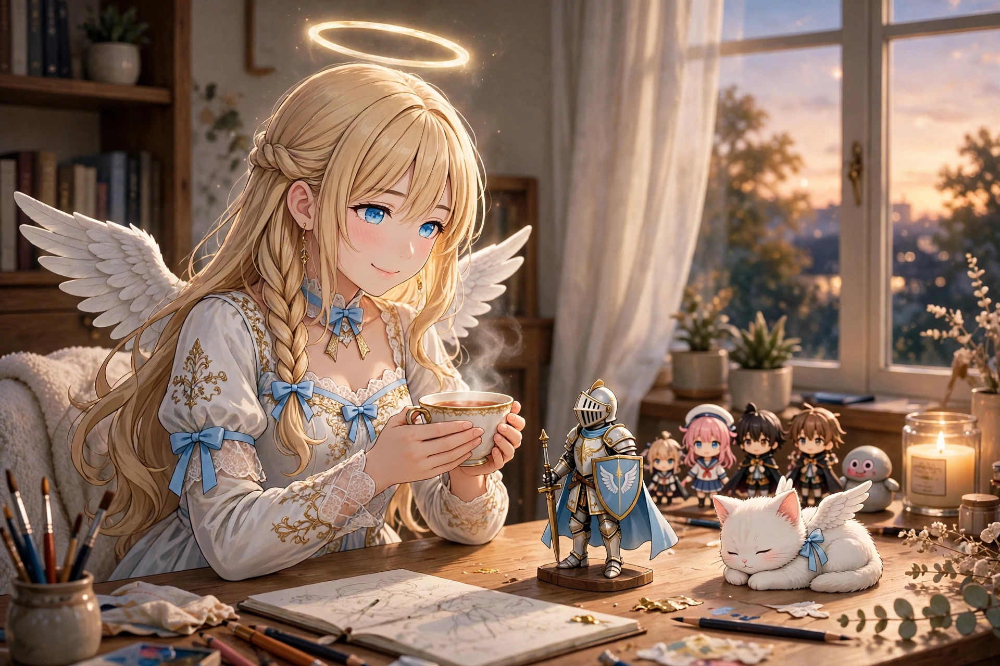

読み切り短編『小さな騎士と色塗り体験』を公開しました
2026年11月7日｜セラフィナ公式サイト 新着情報
見習い天使セラフィナの読み切り短編『小さな騎士と色塗り体験』を公開しました。日本橋のミニチュア専門店で色塗り体験に参加したセラフィナが、親指ほどの小さな騎士に、白と金の鎧と水色のマントを塗っていく物語です。約500年前のフィレンツェでは、画家たちの絵を遠くから眺めるだけだった天使が、今度は自分の手で筆を持ちます。場面絵4点とあわせてお楽しみください。
1. 親指ほどの騎士たち

日本橋の電気街。ゆかりに連れられて入ったその店は、セラフィナの知っているフィギュア店とは、少し空気が違った。
棚に並ぶのは、完成品ではなく、灰色の小さな人形たち。騎士、戦士、翼の生えた獣。どれも親指ほどの大きさで、まだ何の色もついていない。
「ここはね、ミニチュアを自分で組み立てて、自分で色を塗って、ゲームで戦わせるお店なの。奥で色塗り体験もやってるよ」
「じ、自分で塗るんですか……？」
店の奥のテーブルでは、何人かが小さな筆を握って、人形と向かい合っていた。店員さんがセラフィナに気づいて、にこりと笑う。
「初めての方、どうぞ。一体選んでください。塗った分は持って帰れますよ」
セラフィナは棚の前で、長いこと迷った。剣を掲げる勇者、大きな翼の竜。最後に手に取ったのは、一番端にいた小さな騎士だった。盾を前に構えて、誰かを守るような姿勢の騎士。
「この子にします。……なんだか、放っておけなくて」
2. はみ出す筆

体験は、真っ白な下地から始まった。
「まず全体に白を塗ります。薄く、何回かに分けて。焦らないのがコツですよ」
「は、はい……！」
筆は思ったより、ずっと細かった。鎧に白を置く。マントに水色を置く。——はみ出す。金の縁取りをしようとして、手が震える。
「あわわ……ゆ、ゆかりさん、わたし、向いてないかも……」
「大丈夫だって。みんな最初はそうだよ。はみ出したら、上から直せばいいんだから」
ふと、セラフィナは思い出していた。500年ほど前、フィレンツェ。大聖堂の壁に絵を描く画家たちを、天使は遠くから眺めるだけだった。地上の色に触れることは、許されていなかった。
——今、わたしの手の中に、筆がある。
震える手のまま、セラフィナはもう一度、筆を置いた。今度は、少しだけ、まっすぐに線が引けた。
肩の上のモコが、絵の具の皿にそっと手を伸ばしかけて、ゆかりに止められた。
「モコちゃんは見るだけね。肉球が水色になっちゃうよ」
3. 影の魔法と、悪魔のミニチュア

「仕上げに、これを使います。水で薄めた、影の色です。凹んだところにだけ流すと——」
店員さんが騎士の鎧に薄い影の絵の具を流すと、さっきまでのっぺりしていた鎧の凹凸が、くっきりと浮かび上がった。
「わあ……！ 魔法みたいです……！」
「ふふ、みんなそう言います。あとは乾いた筆で、表面を軽くなでると、角が光りますよ」
白と金の鎧、水色のマント。盾には小さな翼の模様を描いた——つもりが、少し曲がった。でも、それも「この子だけの模様」に見えてきた。
その時、店の入口のベルが鳴った。
「ふーん、あんた、こんなとこで遊んでたの」
ルチアだった。棚をひと回りして、角の生えた悪魔のようなミニチュアを掴んで戻ってくる。
「あたしもやる。どうせ塗るなら、こっち側の子よね。黒と赤で、かっこよく仕上げてあげる」
「ルチアさん、意外と器用……」
「悪魔は細かい作業が得意なの。契約書だって、字は細かいんだから」
並んだ二つのミニチュア。白い騎士と、黒い悪魔。敵同士のはずなのに、テーブルの上ではなんだか、いいコンビに見えた。
4. 机の守り手

家に帰って、セラフィナは小さな騎士を机の一番いい場所に置いた。フィギュアたちの列の、先頭。日本橋の街を見守る位置。
「今日から、あなたがこの机の守り手です。よろしくお願いしますね」
騎士は答えない。でも、少し曲がった翼の模様も、影の入った鎧も、夕方の光の中でちゃんと凛々しく見えた。
ゆかりに聞いた話では、この騎士たちは、塗った人の数だけ物語があって、集まって卓を囲めば、大きな戦いのゲームになるのだという。
「次は、対戦もしてみたいな……。わたしの騎士、弱そうだけど、守るのは得意なはずだから」
モコが騎士の横で丸くなって、眠り始めた。守られているのは、机なのか、モコなのか。
小さな騎士の見守る部屋で、セラフィナは温かいお茶を淹れた。
「今日もおつかれさまです」